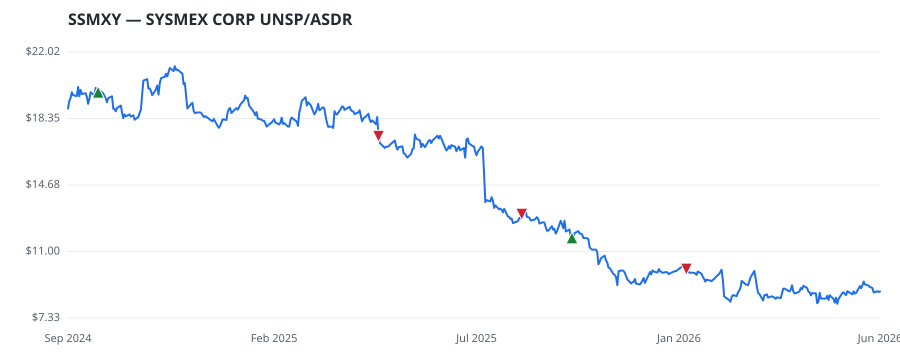

bullish · bearish · n/a — dots: price>SMA10 · SMA10>SMA50 · SMA50>SMA200 · up>down volume (20d)
Other · unknown cap
Members who bought SSMXY earned a dollar-weighted -12.4% from their disclosure dates, versus +3.6% for the S&P 500 over the same holding windows (-16.0% alpha).

▲ green = a disclosed purchase · ▼ red = a disclosed sale (plotted on disclosure date)
SYSMEX CORP UNSP/ASDR
| Member | Chamber | Out-performer | Disclosed buys $ | Return on buys |
|---|---|---|---|---|
| Josh Gottheimer | house | — | $24K | -12.4% |
Disclosed $ figures are bracket midpoints — filings report ranges (e.g. $1,001–$15,000), not exact amounts.